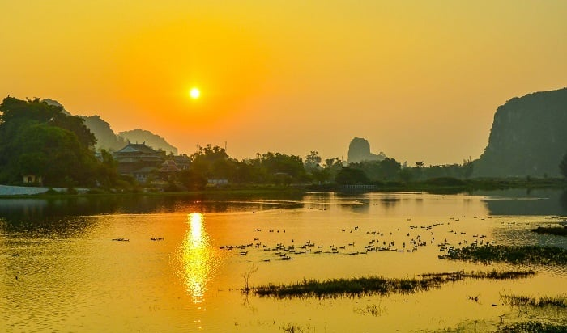

Các di tích lịch sử
Đặt vé tham quan
Đà Nẵng là nơi lưu giữ nhiều di sản văn hóa lịch sử quan trọng như Thánh Địa Mỹ Sơn, Ngũ Hành Sơn, Cầu sông Hàn và Phố cổ Hội An. Các di tích này là những điểm đến hấp dẫn cho du khách muốn khám phá và tìm hiểu về lịch sử và văn hóa của vùng đất này.
1. Thánh địa Mỹ Sơn
Thánh địa Mỹ Sơn là di sản lịch sử nổi tiếng của tỉnh Quảng Nam với quần thể kiến trúc gồm nhiều đền đài Chăm Pa vô cùng độc đáo. Khu di tích được phát hiện vào năm 1885 và được UNESCO công nhận là Di sản Văn hóa thế giới vào năm 1995.
1.1 Thánh địa Mỹ Sơn ở đâu?
Thánh địa Mỹ Sơn là quần thể di sản mang kiến trúc của người Chăm Pa cổ thuộc xã Duy Phú, huyện Duy Xuyên, tỉnh Quảng Nam. Khu vực này có đường kính rộng khoảng 2km với hơn 70 ngôi đền tháp khác nhau mang nhiều nét kiến trúc lịch sử tiêu biểu cho từng giai đoạn phát triển của Chăm Pa cổ.
Thánh địa Mỹ Sơn có niên đại từ khoảng thế kỷ IV dưới thời đại vua Phạm Hồ Đạt, là nơi dùng để thờ cúng thần Linga và Shiva. Sau hai thế kỷ tiếp theo, ngôi đền bị thiêu rụi trong một trận hỏa hoạn lớn. Và tới thế kỷ VII, vua Phạm Phạn Chi đã cho xây lại các ngôi đền - di tích còn tồn tại đến ngày nay.
1.2 Thánh địa Mỹ Sơn có gì thu hút du khách?
Kiến trúc thánh địa Mỹ Sơn với thiết kế độc đáo, tinh xảo, mang đậm dấu ấn được chia làm 6 loại đặc trưng: phong cách cổ, Hòa Lai, Mỹ Sơn, Ponagar, Đồng Dương và phong cách của người dân Bình Định. Khi đi du lịch thánh địa Mỹ Sơn, du khách sẽ thấy đặc điểm của dạng kiến trúc này đó là các tượng khắc bằng đá, tượng thần Siva, tượng khắc các vũ nữ đang múa theo phong cách Chăm Pa.
Trải qua thời gian, khu di tích cũng bị tàn phá một phần bởi các cuộc rải bom của quân đội Mỹ trút xuống Việt Nam. Tuy vậy, nơi đây vẫn còn rất nhiều tòa tháp nguyên vẹn cùng lối kiến trúc độc đáo hấp dẫn du khách.
Khám phá toàn cảnh thánh địa Mỹ Sơn
Thánh địa Mỹ Sơn với hơn 70 ngôi đền được chạm khắc tinh xảo, cầu kỳ mang nhiều dòng chữ quan trọng bằng tiếng Phạn và tiếng Chăm. Di tích này đã bị quên lãng cho đến năm 1898, một người Pháp cùng đồng nghiệp của ông đã phát hiện ra khu di tích nằm ẩn mình trong rừng, giữa lòng thung lũng xung quanh được 2 ngọn núi hùng vĩ che chở.
Ngoài ra, ấn tượng đặc biệt khác khiến thánh địa Mỹ Sơn nổi tiếng đó chính là phần gạch dùng để xây nên các tòa tháp cổ. Những viên gạch được nung và cắt khối, sau đó xếp chồng lên nhau một cách khéo léo mà không hề sử dụng bất kỳ các loại chất kết dính nào. Trải qua nhiều thế kỷ, công trình thánh địa Mỹ Sơn không bị phong hóa mà chỉ bị nứt một phần rất nhỏ.
Trải nghiệm con đường cổ rộng tới 8m độc đáo
Đây là con đường cổ dẫn tới di sản thánh địa Mỹ Sơn được phát hiện bởi một chuyên gia người Ấn Độ trong quá trình tham gia trùng tu và phục chế lại các ngọn tháp trung tâm nằm trong lõi khu di sản. Con đường cổ có chiều rộng tới 8m, với 2 bờ tường song song nhau, độ sâu 1m bị chôn vùi trong lòng đất.
Theo các tài liệu lịch sử ghi chép lại, đây là con đường dẫn thẳng tới vùng trung tâm di sản, nơi có tòa tháp cổng lớn dùng để cúng tế mà chỉ có vua chúa và các thành viên hoàng tộc, các chức sắc cao quý của Chăm Pa cổ mới được phép đi vào. Hệ thống tường bao 2 bên con đường được chạm khắc tinh tế và khéo léo. Sự phát hiện quan trọng này đã góp phần tăng thêm các giá trị lịch sử lâu đời mà di sản thánh địa Mỹ Sơn đem lại.
Thưởng thức điệu múa Apsara đầy mê hoặc
Thánh địa Mỹ Sơn có gì hay? Nơi đây có điệu múa Apsara được lấy cảm hứng từ các tượng đá sa thạch được điêu khắc Apsara. Đây được xem là điệu múa mượt mà, uyển chuyển với tựa đề “Linh hồn của đá” nhằm tôn vinh lên những đường cong uyển chuyển của phái đẹp.
Điệu múa này hiện được dùng để biểu diễn trong các chương trình nghệ thuật quan trọng của tỉnh Quảng Nam cũng như phục vụ cho các đoàn khách du lịch tới tham quan thánh địa Mỹ Sơn. Bạn sẽ như lạc vào vùng đất Chăm Pa cổ xưa với hình ảnh các cô gái với ngón tay búp măng thuôn dài, khuôn ngực căng tròn cùng đường cong quyến rũ trong các trang phục lấp lánh, rực rỡ hòa quyện cùng tiếng trống Paranưng và tiếng khèn Saranai càng khiến du khách muôn phần say đắm.
Hòa mình vào lễ hội Katê truyền thống của người Chăm
Lễ hội Katê là một trong những lễ hội quan trọng của người Chăm thường được diễn ra vào tháng 7 hàng năm theo lịch Chăm. Nếu lịch trình du lịch của bạn gặp đúng dịp lễ hội Katê, không chỉ được tham quan di sản độc đáo, bạn còn được hòa mình cùng các nghi lễ cúng cầu an, kiệu rước lễ phục và Katê, rước nước… Tại lễ hội sẽ có rất nhiều màn biểu diễn văn nghệ đặc sắc kết hợp cùng đạo cụ truyền thống và các điệu múa uyển chuyển của các nghệ sĩ khiến bạn khó có thể rời mắt được.
2. Ngũ Hành Sơn
Ngũ Hành Sơn là tuyệt tác về cảnh quan thiên nhiên mà tạo hóa ban tặng cho vùng đất Đà Nẵng. Có vẻ đẹp hài hòa của vùng sinh thái tự nhiên đan xen cùng với đời sống văn hóa tâm linh nên nơi đây càng ngày càng thu hút khách du lịch đến tham quan hàng năm.
2.1 Ngũ Hành Sơn ở đâu Đà Nẵng?
Địa chỉ Ngũ Hành Sơn: nằm ở số 81 đường Huyền Trân Công chúa, phường Hòa Hải, quận Ngũ Hành Sơn, thành phố Đà Nẵng.
Ngũ Hành Sơn nằm ở khu vực có vị trí địa lý hết sức thuận lợi, cách trung tâm thành phố Đà Nẵng 8km. Đây là điểm đến được du khách yêu mến trên hành trình tham quan các vùng đất thuộc con đường di sản Miền Trung.
2.2 Khám phá khu du lịch Ngũ Hành Sơn có gì đẹp?
Quần thể di tích danh thắng Ngũ Hành Sơn gồm 6 ngọn núi đá vôi: Thổ Sơn, Hỏa Sơn (gồm có Dương Hỏa Sơn và Âm Hỏa Sơn), Thủy Sơn, Mộc Sơn, Kim Sơn. Thêm vào đó, nơi đây còn có phong cảnh đẹp cùng nhiều hang động huyền bí như động Huyền Không, động Huyền Vi, động Vân Thông,… lôi cuốn du khách đến tham quan, du lịch.
Thủy Sơn đẹp nhất trong các ngọn núi ở Ngũ Hành Sơn
Lên đến đỉnh của Thủy Sơn, du khách sẽ phải choáng ngợp trước khung cảnh thiên nhiên đặc sắc của toàn bộ núi Ngũ Hành Sơn, hình ảnh thành phố phía xa và những bãi biển đẹp nên thơ bao quanh đó.
Kim Sơn - Nơi tọa lạc của ngôi chùa Quán Thế Âm
Ngọn núi Kim Sơn có một hang động dài khoảng hơn 50m ẩn mình ở phía dưới. Bên trong hang là những lớp thạch nhũ rất đẹp mắt, hình thể đa dạng, đường nét rõ ràng, sắc sảo. Đặc biệt, lớp thạch nhũ ở hang bám vào vách đá tạo thành hình dáng tượng Quán Thế Âm Bồ Tát kích cỡ như người thật, oai nghiêm đứng trên con rồng cuộn mình.
Đây là điểm đến không thể bỏ qua đối với những tín đồ du lịch tâm linh. Ngoài ra, ở Kim Sơn còn nổi tiếng với lễ hội Quán Thế Âm truyền thống được tổ chức hàng năm, nhằm duy trì và lan tỏa nét văn hóa Phật giáo.
Mộc Sơn với khối đá Quan Âm cẩm thạch màu trắng
Mộc Sơn có một khối đá cẩm thạch màu trắng với hình dáng như một người đang ngồi gây ấn tượng với nhiều du khách. Khối đá thường được người dân bản địa gọi Bà Quan Âm hay Cô Mụ. Đây là ngọn núi duy nhất ở Ngũ Hành Sơn không có chùa chiền hay tâm linh, cũng rất ít cây cối.
Chùa Linh Ứng Ngũ Hành Sơn
Chùa Linh Ứng Đà Nẵng là ngôi chùa cổ có tuổi đời gần 200 năm, nằm trên ngọn Thủy Sơn, chốn linh thiêng giữa thiên nhiên kỳ vĩ của núi Ngũ Hành Sơn Đà Nẵng.
Tham quan chính điện chùa Linh Ứng, du khách sẽ nhìn thấy hệ thống tượng pháp bài trí gồm: ba pho tam thế Phật, Văn Thù Bồ Tát, Phổ Hiền Bồ Tát, Quán Thế Âm, Thích Ca Như Lai, Địa Tạng, Quan Âm Chuẩn Đề đều được tạo tác công phu, 2 pho tượng Hộ Pháp và Thập Bát La Hán.
Hỏa Sơn
Hỏa Sơn gồm hai ngọn núi đôi là Âm Hỏa Sơn và Dương Hỏa Sơn. Âm Hỏa Sơn nằm ở phía đông, là điểm đến hấp dẫn cho những du khách đam mê, muốn tìm hiểu về đá và nghệ thuật. Ở Âm Hỏa Sơn, sườn núi là những thớ đá nằm nghiêng, đứt đoạn, ở kẽ đá có cây cối mọc rất độc đáo. Đặc biệt, phía dưới còn một hang động thông từ sườn Nam ra sườn Bắc.
Dương Hỏa Sơn nằm ở phía tây, có chùa cổ Linh Sơn, phía sau chùa có động Huyền Vy. Ngoài ra, còn có hang Phổ Đà Sơn, phía trong là ngôi chùa Phổ Đà Sơn với những sử tích về em gái vua Minh Mạng.

Thổ Sơn sở hữu 1 địa đạo và 4 ngôi chùa
Thổ Sơn gây ấn tượng bởi những vách đá dựng đứng. Nơi đây có rất ít cây cối, nằm ở phía Bắc của Ngũ Hành Sơn. Phía Đông Thổ Sơn có một hang sâu khoảng 20m, tuy nhiên lối vào rất hẹp. Ngoài ra, còn có hang động Bồ Đề, được biết đến với tên gọi khác là “Địa đạo núi Đá Chồng”. Là di tích lịch sử, từng là nơi ẩn nấp và hoạt động của các chiến sĩ cách mạng thời xưa.
3. Cầu sông Hàn
Cầu sông Hàn nổi tiếng với vẻ đẹp hài hòa, thơ mộng. Tới đây cũng là lúc bạn đặt chân lên cây cầu quay đầu tiên tại Việt Nam. Đồng thời, công trình đã tạo nên mỹ quan đô thị tuyệt đẹp cho Đà Nẵng.
Cầu sông Hàn được ví là biểu tượng của thành phố biển bởi công trình đã đánh dấu sự chuyển mình của Đà thành cũng như thể hiện cho sức sống mới, sự trẻ trung, năng động, khát vọng đi lên. Địa danh này hoàn thành nhờ sự đóng góp của đông đảo người dân nơi đây.
Ngắm nhìn cầu sông Hàn vào ban đêm, du khách sẽ được chiêm ngưỡng ánh đèn lấp lánh. Hình ảnh này nhanh chóng phản chiếu xuống mặt nước càng tạo ra khung cảnh lung linh. Đặc biệt, trên trời cao có những ánh sao sáng hòa quyện mang lại những trải nghiệm khó quên.
3.1 Cầu sông Hàn ở đâu? Đôi nét về cầu quay sông Hàn
Cầu sông Hàn là một trong những cây cầu bắc qua sông Hàn ở Đà Nẵng, miền Trung Việt Nam. Công trình này do kỹ sư, công nhân nước ta tự lên ý tưởng và thi công. Thiết kế cầu quay sông Hàn được làm bằng bê tông cốt thép rất chắc chắn.
Ngắm nhìn cầu sông Hàn vào ban đêm, du khách sẽ được chiêm ngưỡng ánh đèn lấp lánh. Hình ảnh này nhanh chóng phản chiếu xuống mặt nước càng tạo ra khung cảnh lung linh. Đặc biệt, trên trời cao có những ánh sao sáng hòa quyện mang lại những trải nghiệm khó quên.
3.2 Khám phá thiết kế cầu quay sông Hàn
Cầu sông Hàn được khởi công vào ngày 2/9/1998, khánh thành vào 29/3/2000. Cầu có chiều dài 487,7 mét, rộng 12,9 mét, bao gồm 11 nhịp, mỗi nhịp dài 33 mét. Đồng thời, các dự ứng lực và 2 nhịp dây văng có tổng chiều dài 122,7 mét.
Cầu sông Hàn quay nhằm mục đích phục vụ cho giao thông đường thủy. Hoạt động này tạo điều kiện thuận lợi cho các tàu thuyền qua lại. Sở dĩ, cầu quay là do phần trục chính có thể di chuyển được góc 90 độ.
3.3 Cầu sông Hàn quay lúc nào? Chi tiết thời gian cầu quay
Qua nhiều năm, cầu quay sông Hàn đã được điều chỉnh giờ giấc hoạt động. Tuy vẫn quay vào buổi tối nhưng thời gian khác nhau cho từng ngày, cụ thể như sau:
Thứ 2 đến thứ 6: Bắt đầu từ 0h45 phút, các hoạt động giao thông sẽ tạm ngưng. Tầm 1h sáng là thời gian cầu sông Hàn quay với nhịp giữa 90 độ để lộ ra 2 con đường cho tàu thủy qua lại. Tùy vào số lượng tàu ít hay nhiều, cầu sẽ quay lại vị trí ban đầu vào lúc 2h hoặc 4h sáng.
Thứ 7 và chủ nhật: Vào thời điểm cuối tuần, nhu cầu du lịch Đà Nẵng nói chung và tham quan cầu sông Hàn nói riêng tăng đột biến. Vì thế, chính quyền địa phương đã đẩy giờ quay cầu sớm hơn mọi khi. Từ 22h45, toàn bộ phương tiện giao thông sẽ ngừng di chuyển, đúng 23h cây cầu bắt đầu di chuyển và sau khoảng 60 phút sẽ quay lại vị trí ban đầu.
4. Phố cổ Hội An
Phố cổ Hội An là địa điểm du lịch nổi tiếng cách trung tâm thành phố Đà Nẵng khoảng 30km về phía Tây Nam. Không ồn ào, náo nhiệt, Hội An mang vẻ đẹp bình lặng và cổ kính. Sức hấp dẫn của đô thị hơn 400 năm tuổi xuất phát từ những kiến trúc cổ, những nhà mái ngói rêu phong, những con phố đèn lồng đầy màu sắc...
Ngoài ra, Hội An cũng nổi tiếng với những lễ hội truyền thống đặc sắc như: lễ hội thành hoàng làng, lễ tưởng niệm các tổ sư ngành nghề, lễ kỷ niệm các bậc thánh nhân tôn giáo,... và các trò chơi dân gian như hò khoan, hò giã gạo, bài chòi,...
Không chỉ được đắm mình trong vẻ đẹp bình dị của phố cổ, du lịch phố cổ Hội An bạn còn được khám phá sự giao thoa giữa các nền văn hóa phương Đông đến từ Nhật Bản, Trung Quốc và văn hóa Việt. Bởi Hội An vốn là thương cảng đông đúc và sầm uất nhất tồn tại dưới triều Nguyễn cách đây khoảng 200 năm, chính sự giao thương giữa Việt Nam và các nước khác (Nhật Bản, Trung Quốc,...) đã tạo nên một Hội An đa văn hóa, đa sắc màu tồn tại đến ngày nay...
4.1 Giới thiệu về phố cổ Hội An
Du lịch phố cổ Hội An là trải nghiệm thú vị và đáng nhớ với nhiều bạn trong và ngoài nước. Phố cổ Hội An là địa điểm du lịch nổi tiếng cách trung tâm thành phố Đà Nẵng khoảng 30km về phía Tây Nam. Không ồn ào, náo nhiệt, Hội An mang vẻ đẹp bình lặng và cổ kính. Sức hấp dẫn của đô thị hơn 400 năm tuổi xuất phát từ những kiến trúc cổ, những nhà mái ngói rêu phong, những con phố đèn lồng đầy màu sắc...
Ngoài ra, Hội An cũng nổi tiếng với những lễ hội truyền thống đặc sắc như: lễ hội thành hoàng làng, lễ tưởng niệm các tổ sư ngành nghề, lễ kỷ niệm các bậc thánh nhân tôn giáo,... và các trò chơi dân gian như hò khoan, hò giã gạo, bài chòi,...
Không chỉ được đắm mình trong vẻ đẹp bình dị của phố cổ, du lịch phố cổ Hội An bạn còn được khám phá sự giao thoa giữa các nền văn hóa phương Đông đến từ Nhật Bản, Trung Quốc và văn hóa Việt. Bởi Hội An vốn là thương cảng đông đúc và sầm uất nhất tồn tại dưới triều Nguyễn cách đây khoảng 200 năm, chính sự giao thương giữa Việt Nam và các nước khác (Nhật Bản, Trung Quốc,...) đã tạo nên một Hội An đa văn hóa, đa sắc màu tồn tại đến ngày nay...
4.2 Du lịch phố cổ Hội An lý tưởng nhất vào thời gian nào?
Du lịch phố cổ Hội An lý tưởng nhất là từ tháng 2 đến tháng 4 hàng năm bởi vào thời gian này tiết trời xuân mát mẻ, Hội An ít mưa & có nắng nhẹ rất thích hợp để khách du lịch đến tham quan, khám phá.
Tháng 5 đến tháng 8 nắng đẹp, tuy khoảng thời gian tháng 5 - tháng 6 thời tiết một số ngày nắng gắt cần chịu khó một chút nhưng bù lại đây là thời điểm tuyệt vời để lặn ngắm san hô tại Cù Lao Chàm. Bên cạnh đó, nếu có kế hoạch du lịch Hội An vào các tháng khác, bạn hãy chủ động theo dõi dự báo thời tiết để có chuyến đi thuận lợi nhất!